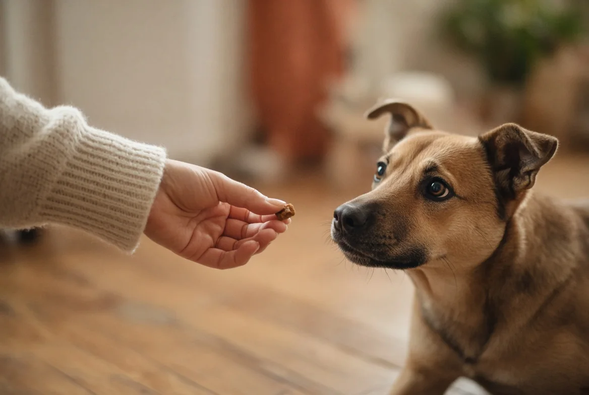

העשרה מנטלית לכלב
כלב משועמם לא "מוצא לעצמו תעסוקה" — הוא לרוב מוצא בעיה: חפירה, נביחה, לעיסה של מה שאסור. העשרה מנטלית היא לא פינוק, היא צורך בסיסי כמו טיול — רק שהיא מפעילה את המוח, לא רק את הרגליים.
בקצרה — 40 שנייה
- יש חמש קטגוריות של העשרה — לא רק "צעצועים"
- עבודת אף (הרחה) היא ההשקעה הכי משתלמת: קלה, זולה, ומרגיעה
- 10–20 דקות מרוכזות ביום משנות התנהגות — לא צריך שעות
- העשרה משלימה פעילות גופנית, לא מחליפה אותה
חמש קטגוריות של העשרה
מרכז לרווחת כלבים באוניברסיטת פרדיו (Purdue) מחלק העשרה לחמישה סוגים. אין צורך "לסמן וי" על כולם כל יום — אבל שווה לדעת שהם קיימים, כי כלב יכול להיראות "מפונק" בקטגוריה אחת ורעב לגמרי באחרת:
- חושית — ריחות, מרקמים ומראות חדשים. הרחה בפארק אחר, הליכה על דשא/חול/שלוליות, צליל חדש.
- חברתית — זמן איכות עם אנשים או כלבים אחרים, לא רק נוכחות באותו חדר.
- תזונתית — הדרך שבה האוכל מגיע, לא רק מה יש בו: לחפש, לעבוד, לפרק — במקום לקבל הכל בקערה תוך שתי שניות.
- תעסוקתית / קוגניטיבית — פתרון בעיות: פאזלים, אימון טריקים חדשים, "שיינינג" (בניית התנהגות בשלבים קטנים).
- פיזית — לא רק הליכה בקו ישר: קפיצות, טיפוס, שינויי כיוון, משטחים לא יציבים.
עבודת אף: ההשקעה הכי משתלמת
הרחה היא לא רק דרך לאסוף מידע — היא פעולה מרגיעה בפני עצמה, ומשמשת חוקרי התנהגות ככלי להפחתת מתח אצל כלבי מקלט. כמה דרכים פשוטות להתחיל:
- שביל ריח — לפזר חטיפים קטנים על הדשא או ברחבי החדר ולתת לכלב לחפש, במקום להגיש בקערה.
- מחצלת הרחה (snuffle mat) — בד עם "כיסים" שמסתירים אוכל, מכריח שימוש באף ולא רק בעיניים.
- מחבואים — להסתיר חטיף בחדר ולעודד את הכלב "למצוא", או להסתתר בעצמכם ולקרוא לו למצוא אתכם.
צעצועי חשיבה ומזון
צעצועים שדורשים "עבודה" כדי לקבל תגמול (קונג ממולא וקפוא, כדורי חטיפים מתגלגלים, לוחות פאזל) מאריכים את זמן העיסוק ומספקים סיפוק אמיתי. קונג קפוא (ממולא במזון רטוב או יוגורט ומוקפא מראש) לוקח משמעותית יותר זמן מקונג רגיל — שימושי במיוחד בשעות שבהן הכלב לבד.
אימון קצר — ללמד טריק חדש, לא רק לחזור על ישן — הוא גם סוג של העשרה תעסוקתית, ולא רק "אילוף". ראו טריקים בסיסיים להתחלה פשוטה.
כמה זמן זה דורש בפועל
10 עד 20 דקות מרוכזות ביום כבר עושות הבדל — ולעיתים כמה מפגשים קצרים של 5–10 דקות יעילים יותר ממפגש ארוך אחד, כי תשומת הלב של כלב (בדיוק כמו של בני אדם) יורדת עם הזמן. אין צורך "להשקיע שעות" כדי לראות שינוי.
נסה את זה היום
לפני הארוחה הבאה: לפזר את המנה על הדשא בחצר, או במחצלת הרחה/מגבת מקומטת בבית, במקום להגיש בקערה. זו העשרה תזונתית וחושית בבת אחת, בלי לקנות שום דבר.
דגלים אדומים
- פאזל קשה מדי מדי מהר יכול לייצר תסכול במקום סיפוק — אם הכלב מוותר או מתעצבן, כדאי לפשט את המשימה ולבנות הצלחה לפני שמקשים.
- צעצועי לעיסה צריכים להתאים לגודל וללהט הלעיסה של הכלב הספציפי — לעיסה אגרסיבית של חלקים קטנים היא סיכון חנק אמיתי, לא רק "בזבוז צעצוע".
כל התוכן באתר הוא מידע כללי בגדר המלצה בלבד. הוא אינו מהווה ייעוץ וטרינרי, אבחון רפואי או תוכנית אילוף פרטנית, ואינו מחליף בדיקה של וטרינר מורשה או ליווי של מאלף מוסמך שרואה את הכלב.